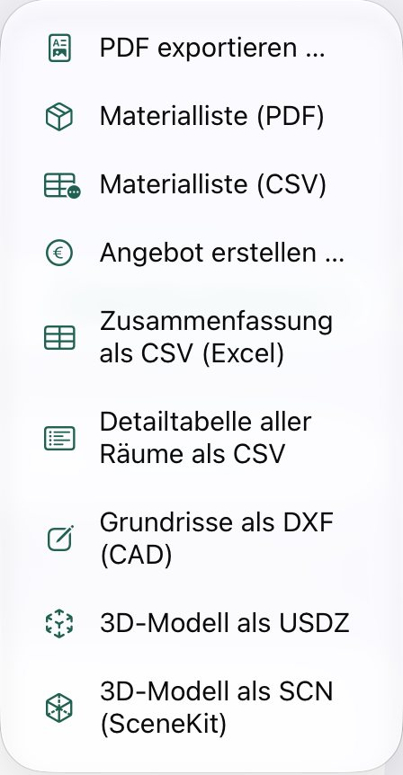

Hilfe
Alles zu Rastivo, vom ersten Scan bis zum Angebot als PDF. Suche nach einem Begriff oder wähle ein Kapitel.
Erste Schritte
Was du brauchst
- Für den automatischen Raumscan ein iPhone oder iPad mit LiDAR-Sensor (iPhone Pro ab 12 Pro, iPad Pro mit LiDAR).
- Ohne LiDAR kannst du Räume von Hand mit Länge, Breite und Höhe anlegen. Alle anderen Funktionen stehen dir ebenfalls zur Verfügung.
- Kein Konto nötig. Alle Daten bleiben auf deinem Gerät.
Unterstützte Geräte
Für den automatischen Raumscan brauchst du ein Gerät mit LiDAR-Scanner und iOS bzw. iPadOS 17 oder neuer.
iPhone
- iPhone 12 Pro / 12 Pro Max
- iPhone 13 Pro / 13 Pro Max
- iPhone 14 Pro / 14 Pro Max
- iPhone 15 Pro / 15 Pro Max
- iPhone 16 Pro / 16 Pro Max
- iPhone 17 Pro / 17 Pro Max
- iPhone 18 Pro / 18 Pro Max
iPad
- iPad Pro 11" (2. Generation, 2020)
- iPad Pro 11" (3. Generation, 2021)
- iPad Pro 11" (4. Generation, 2022)
- iPad Pro 11" M4 (2024)
- iPad Pro 11" M5 (2025)
- iPad Pro 12,9" (4. Generation, 2020)
- iPad Pro 12,9" (5. Generation, 2021)
- iPad Pro 12,9" (6. Generation, 2022)
- iPad Pro 13" M4 (2024)
- iPad Pro 13" M5 (2025)
Nicht für den Scan geeignet (kein LiDAR): iPhone ohne Pro, iPad Air, iPad mini, iPad (Standard), iPad Pro 11" (1. Generation, 2018) und iPad Pro 12,9" (3. Generation, 2018). Auf diesen Geräten kannst du Räume von Hand anlegen.
Aufbau der App
Unten gibt es zwei Bereiche: Projekte mit deinen Aufmaßen und Einstellungen für Abzugsregeln, Gewerk, Preise, Firmenkopf und Datensicherung.
Ein Projekt ist z. B. eine Wohnung oder ein Auftrag. Es enthält beliebig viele Räume. Jeder Raum hat einen Grundriss, Flächen, Objekte sowie Notizen und Fotos.
Zum Ausprobieren: das Beispielprojekt
Solange noch kein Projekt existiert, tippe auf Beispielprojekt ansehen. Später findest du es unter Einstellungen → Über die App → Beispielprojekt hinzufügen. Es enthält ein Wohnzimmer und ein Bad mit Heizkörpern und Sanitärobjekten. So kannst du Grundriss, Heizlast und Angebot auch ohne LiDAR-Gerät ausprobieren.
Lege vor dem ersten echten Auftrag den Firmenkopf und deine Preisliste an. Dann sind PDF und Angebot sofort fertig zum Versenden.
Projekte
Projekt anlegen
- Tippe in Projekte auf Neues Projekt.
- Gib einen Projektnamen ein, optional auch den Kunden.
- Tippe auf Anlegen.
Die Projektkarte zeigt die Gesamtfläche und die Anzahl der Räume.
Bearbeiten und löschen
Wische eine Projektkarte nach links oder halte sie gedrückt. Dann wählst du Bearbeiten (Name, Kunde) oder Löschen. Beim Löschen werden das Projekt und alle seine Räume entfernt. Dafür fragt die App nach einer Bestätigung.
Gewerk des Projekts
Oben im Projekt wählst du unter Gewerk, welche Auswertung angezeigt wird. Standard übernimmt das Gewerk aus den Einstellungen. Mehr dazu unter Gewerke und Arbeitsumfang.
Gesamtauswertung
Unter Gesamtauswertung zeigt das Projekt die Summen aller Räume, etwa Decke, Wände (netto und brutto), Boden, Schrägen, Rauminhalt und Sockelleiste. Welche Werte erscheinen, hängt vom Gewerk ab.
Raum scannen (LiDAR)
- Öffne ein Projekt und tippe oben rechts auf +.
- Gib einen Namen ein, z. B. „Wohnzimmer“.
- Tippe auf Mit LiDAR scannen.
- Geh langsam einmal durch den Raum und richte die Kamera auf alle Wände, Türen und Fenster. Die App zeigt unten an, was sie schon erkannt hat.
- Tippe auf Scan beenden. Danach übernimmt die App Länge, Breite, Höhe, Bodenfläche und Grundriss.
- Prüfe die Werte und tippe auf Speichern.
Tipps für einen guten Scan
- Bewege dich langsam und dreh dich gleichmäßig. Zeig jede Wand einmal vollständig, auch Ecken und Nischen.
- Richte die Kamera nicht nur auf den Boden, sondern auch auf die Wände. Sonst fehlt die Raumhöhe.
- Sorge für gutes Licht. Spiegel, große Glasflächen und sehr dunkle Räume erschweren die Erkennung.
- Treppen werden als Objekt erkannt. Wie sie in die Flächen eingehen, legst du später im Raum fest (siehe Treppe).
Automatisch ermittelte Maße sind Näherungswerte. Bitte kontrolliere sie vor Ort, bevor du sie abrechnest.
Raum von Hand anlegen
Ohne LiDAR oder für einfache rechteckige Räume trägst du im Dialog Raum hinzufügen Länge, Breite und Höhe ein. Die App rechnet daraus die Bodenfläche. Maße gibst du in Metern ein, bei imperialen Einheiten in Fuß.
Später kannst du im Raum über Bearbeiten den Namen und die Abmessungen jederzeit ändern.
Grundriss und 3D-Modell

Oben im Raum schaltest du zwischen Grundriss und 3D-Modell um.
- Grundriss: Tippe eine Wand, eine Tür oder ein Fenster an, um Maße und Öffnungsart zu ändern. Mit Vergrößern (oder durch Antippen einer freien Fläche) öffnest du den Grundriss als Vollbild. Dort zoomst du mit zwei Fingern und verschiebst mit einem.
- 3D-Modell: Mit einem Finger drehen, mit zwei Fingern zoomen und verschieben.
Nummerierung
Wände werden im Uhrzeigersinn nummeriert: W1, W2 …, Türen mit T, Fenster mit F. Dieselben Nummern stehen in der Wandliste und im PDF. So lässt sich jede Zeile eindeutig zuordnen.
Wand, Tür oder Fenster ändern
Nach dem Antippen öffnet sich ein Fenster mit den Bereichen Maße und Notizen. Mit Übernehmen speicherst du, und alle Flächen werden neu berechnet.
- Abmessungen: Breite und Höhe. Bei Fenstern gibt es zusätzlich die Brüstungshöhe (BRH), bei Wänden Länge und Höhe.
- Laibung: Gib eine Laibungstiefe in cm ein. Ab einer Tiefe über 0 addiert die App die Laibungsfläche zur Nettowandfläche (Türen: 2 × Höhe + Breite, Fenster: Umfang).
- Tür- bzw. Fensterart: 1 oder 2 Flügel, öffnet nach innen oder außen, Anschlag links oder rechts (von innen gesehen). Flügel und Öffnungsbogen erscheinen im Grundriss, im 3D-Modell und im PDF.
- Öffnung löschen: Hat der Scan z. B. ein Handtuch als Fenster erkannt, entferne es mit Fenster löschen bzw. Tür löschen.
- Auf gescannte Maße zurücksetzen stellt die ursprünglichen Werte wieder her.
Flächen und Kennwerte
Unter Kennwerte zeigt jeder Raum je nach Gewerk diese Werte:
| Wert | Bedeutung |
|---|---|
| Decke | Waagerechte Deckenfläche |
| Wände (netto) | Wandfläche abzüglich der Öffnungen, plus Laibungen. Darunter steht die Bruttofläche. |
| Wandfliesen | Netto-Wandfläche bis zur eingestellten Fliesenhöhe (Fliesenleger) |
| Boden / Bodenfliesen | Bodenfläche, bei Verschnitt zusätzlich „Boden + Verschnitt“ |
| Schrägen | Fläche der Dachschrägen |
| Rauminhalt | Volumen des Raums |
| Sockelleiste / Sockelfliesen | Wandumfang abzüglich der Türbreiten |
| Decke + Wände | Summe zum Streichen (Maler) |
| Laibungen | Laibungsflächen, bereits in den Wänden enthalten |
| Kniestock- / Raumhöhe | Bei Dachschrägen die niedrigste Wandhöhe, sonst die mittlere Raumhöhe |
Wandliste
Unter Wände steht jede Wand mit Länge, Höhe, Brutto- und Nettofläche. Darunter siehst du ihre Türen und Fenster mit dem Abzug oder dem Vermerk „kein Abzug“.
Dachschrägen
Wird eine Schräge erkannt, zeigt der Abschnitt Dachschräge Kniestockhöhe, höchste Raumhöhe, Winkel und Fläche jeder Schräge sowie die waagerechte Decke. Grundlage ist das Profil einer Referenzwand. Dabei wird ein gleichbleibender Querschnitt vorausgesetzt.
Treppe
Wurde eine Treppe erkannt, wählst du unter Treppe: Nicht berücksichtigen, Nach oben (die Deckenöffnung wird abgezogen) oder Nach unten (die Bodenöffnung wird abgezogen).
Verschnitt
Ist in den Einstellungen ein Verschnittzuschlag über 0 % eingetragen, zeigt der Raum zusätzlich Boden-, Wand- und Deckenfläche inklusive Verschnitt. Diese Werte erscheinen auch im PDF.
Gewerke und Arbeitsumfang
Das Gewerk bestimmt, welche Werte in Projekt, PDF und CSV erscheinen. Den Standard legst du unter Einstellungen → Gewerk fest. Pro Projekt kannst du ein anderes Gewerk wählen.
| Gewerk | Auswertung |
|---|---|
| Allgemein | Alle Werte |
| Maler | Wände, Decke (inkl. Schrägen), optional Boden. Zusätzlich „Decke + Wände“ |
| Bodenleger | Boden und Sockelleiste, optional mit Verschnitt |
| Fliesenleger | Bodenfliesen, Wandfliesen bis Fliesenhöhe, Sockelfliesen |
| Sanitär / Heizung | Heizlast, Heizkörper, Rohr- und Wasserleitungslängen, Materialliste |
| Elektro | Steckdosen, Schalter, Lichtpunkte, Leitungslängen, Materialliste |
Arbeitsumfang je Raum
Bei Maler, Bodenleger und Fliesenleger tippst du unter dem Raum (in der Raumliste) oder im Raum auf Arbeitsumfang. Dort legst du fest, welche Teile bearbeitet werden, z. B. nur Wände oder nur Boden.
- Sind alle Teile ausgeschaltet, wird der Raum von diesem Gewerk nicht bearbeitet und taucht in der Auswertung nicht auf.
- Diesen Umfang für alle Räume übernehmen überträgt die Auswahl auf das ganze Projekt.
Fliesenhöhe
Für Fliesenleger gibt es eine Fliesenhöhe. Den Standardwert legst du in den Einstellungen fest. Pro Raum kannst du eine eigene Höhe angeben, z. B. 1,20 m im Flur und 2,10 m im Bad. Ohne eigene Angabe gilt die Höhe aus dem Projekt.
Sanitär / Heizung

1. Gebäudedaten festlegen
Im Projekt tippst du auf Gebäudedaten und Annahmen:
- Dämmstandard (Altbau unsaniert, Teilsaniert, Standard GEG, Neubau/KfW). Er legt die U-Werte für Wände, Fenster, Dach und Boden fest.
- Normaußentemperatur, z. B. −12 °C (Berlin −14 °C, München −16 °C).
- Vor- und Rücklauftemperatur. Sie bestimmen die Heizkörpergröße, z. B. 55/45 bei einer Wärmepumpe und 70/55 im Altbau.
- Aufheizzuschlag: 0 bei durchgehendem Betrieb, sonst z. B. 10–15 W/m².
- Zuleitung je Raum (Rohr): die Entfernung vom Verteiler zum Raum.
2. Räume einstellen
Tippe in der Raumliste auf die Zeile mit dem Tropfen-Symbol unter dem Raum. Dort stellst du ein:
- Raumnutzung (z. B. Wohnen, Bad, Flur). Sie bestimmt die Raumtemperatur und den Luftwechsel.
- Jede Wand: Innenwand, Außenwand oder Wand zum unbeheizten Raum. Wände mit Fenster gelten zunächst als Außenwand. Bitte prüfen!
- Boden (Erdreich, unbeheizter Keller, beheizter Raum) und Decke (beheizter Raum, unbeheizter Dachraum, Dach/Außenluft)
- Heizkörper und Sanitärobjekte (siehe Objekte). Mit Heizkörper unter Fenstern platzieren setzt die App die vorgeschlagenen Heizkörper unter die Fenster der Außenwände.
Unter Ergebnis siehst du die Heizlast gesamt und je m², die Heizkörper, die Rohrdimension und -länge sowie die Wasserleitung.
Heizlast ausblenden
Die vereinfachte Heizlast nach DIN EN 12831 ist nur für den deutschen Markt relevant. Unter Einstellungen → Heizlast (DIN EN 12831) anzeigen blendest du sie aus. Heizkörper und Leitungen bleiben erhalten.
Alle Werte sind Richtwerte für die Materialplanung und ersetzen keine Berechnung durch den Fachplaner.
Elektro
Gebäudedaten
Unter Gebäudedaten und Annahmen legst du die Zuleitung je Raum (mittlere Leitungslänge vom Verteiler) und die Reserve auf Leitungslängen in % fest. Außerdem bestimmst du, ob Steckdosen mit 3×2,5 mm² statt 3×1,5 mm² berechnet werden.
Ausstattung je Raum
Tippe in der Raumliste auf die Zeile mit dem Blitz-Symbol unter dem Raum:
- Raumnutzung und Beleuchtung (Deckenspots, Lampenauslass oder keine)
- Anzahl der Steckdosen, Schalter und Lichtpunkte. Die Zahlen sind Vorschläge nach Raumnutzung und Fläche und lassen sich mit den Zählern ändern. Auf Vorschlag zurücksetzen stellt sie wieder her.
- Geräte wie Herd/Backofen (5×2,5) oder Geschirrspüler/Waschmaschine (3×2,5) als Objekt. Sie ersetzen die Pauschalleitungen.
Unter Leitungen stehen die Leitungslängen je Typ, inklusive Reserve. Das Projekt zeigt zusätzlich eine Leitungsliste über alle Räume.
Richtwerte. Die Auslegung übernimmt die Elektrofachkraft.
Objekte
Objekte sind Treppe, Heizkörper, WC, Waschbecken/Spüle, Badewanne, Dusche, Herd, Backofen, Geschirrspüler, Waschmaschine/Trockner, Kühlschrank sowie die Anschlusspunkte Wasser-Hauptleitung, Heizungsanschluss/Verteiler und Elektro-Verteiler.
- Hinzufügen: Tippe im Raum oder in der Heizlast-/Elektro-Ansicht auf Objekt hinzufügen.
- Verschieben und drehen: Tippe ein Objekt an, in der Liste oder im Grundriss. Die Pfeile verschieben es, die mittlere Taste dreht es um 90°. Die Schrittweite (1, 5, 10 oder 25 cm) wählst du darüber.
- Löschen: Objekt löschen im selben Fenster.
Rohr- und Leitungslängen werden nach jeder Änderung neu berechnet. Gemessen wird rechtwinklig vom nächsten Anschlusspunkt im Raum, sonst von der ersten Tür. Ohne Anschlusspunkt kommt die Zuleitung zum Raum hinzu.
Notizen und Fotos
Zu jedem Raum, jeder Wand, Tür und jedem Fenster kannst du eine Notiz und Fotos speichern, etwa zu einem Feuchteschaden, einem Riss oder einer Steckdose, die versetzt werden soll.
- Raum: Abschnitt Notizen und Fotos → Raum: Notiz und Fotos
- Wand, Tür, Fenster: im Grundriss antippen und oben in den Notiz-Bereich wechseln
- Foto aufnehmen öffnet die Kamera. Aus Mediathek wählen fügt bis zu 5 Bilder auf einmal hinzu.
Notizen und Fotos erscheinen im PDF auf eigenen Seiten, wenn die Option Notizen und Fotos eingeschaltet ist.
Preisliste und Angebot
Preisliste einrichten
- Öffne Einstellungen → Preisliste und Angebot.
- Wähle das Gewerk und trage die Preise für die Positionen ein. Positionen kannst du umbenennen, ein- und ausschalten oder mit Position hinzufügen ergänzen.
- Lege unter Konditionen die Mehrwertsteuer und die Gültigkeit in Tagen fest.
- Schreibe unter Texte im Angebot eine Einleitung und einen Schlusstext.
Die Mengen kommen automatisch aus dem Aufmaß: Arbeitsumfang je Raum, Verschnitt und platzierte Objekte. Eine „Pauschale“ zählt als 1 und erscheint nur, wenn ein Preis eingetragen ist.
Angebot erstellen
- Tippe im Projekt (oder in einem Raum) oben rechts auf das Teilen-Symbol und dann auf Angebot erstellen ….
- Prüfe die Positionen und gib bei Bedarf einen Nachlass in % ein. Netto, MwSt. und Brutto werden sofort berechnet.
- Mit Preise anzeigen ausgeschaltet enthält das PDF nur Positionen und Mengen, z. B. für Mitarbeiter oder die Bauleitung.
- Tippe auf PDF erstellen und teile es per Mail, Nachrichten oder über die Dateien-App.
Export und Teilen

Das Teilen-Symbol oben rechts öffnet den Export. Im Projekt exportierst du alle Räume, im Raum nur diesen einen.
| Format | Inhalt |
|---|---|
| Grundriss mit Bemaßung und Flächen. Beim Projekt zusätzlich eine Gesamtauswertung und eigene Seiten je gewähltem Raum | |
| Materialliste (PDF/CSV) | Rohre, Fittings, Kabel und Stückzahlen (nur bei Sanitär/Heizung und Elektro) |
| Angebot (PDF) | Siehe Preisliste und Angebot |
| CSV (Excel) | Zusammenfassung, Detailtabelle aller Räume oder Tabelle eines Raums |
| DXF (CAD) | Grundrisse für CAD-Programme |
PDF-Optionen
Vor dem Erstellen legst du fest, was ins PDF kommt:
- Grundriss: Wandmaße, Innenwände, Wand- und Öffnungsnummern, Türmaße, Fenstermaße mit Brüstungshöhe (BRH)
- Flächen und Maße: Wandflächen je Wand, Boden-, Deckenfläche, Rauminhalt, Dachschrägen
- Zusatzseiten: Firmenkopf, Notizen und Fotos, Fachauswertung, Nur Inhalte für das Gewerk (blendet z. B. die Decke beim Bodenleger aus)
- Projekt: Gesamtauswertung als Tabelle, Materialliste und die Auswahl der Räume mit eigenen Seiten
CSV und DXF bleiben immer metrisch, auch wenn die App imperiale Einheiten anzeigt.
Einstellungen
| Einstellung | Wirkung |
|---|---|
| Gewerk | Standard-Gewerk für neue Projekte und die Standard-Fliesenhöhe |
| Datensicherung | Siehe Datensicherung |
| Preisliste und Angebot | Preise je Gewerk, MwSt., Gültigkeit, Angebotstexte |
| Einheiten | Automatisch (nach Region), metrisch (m, m²) oder imperial (ft, ft²). Gespeichert wird immer metrisch. |
| Heizlast anzeigen | Blendet die Heizlast nach DIN EN 12831 ein oder aus |
| Firmenkopf für PDF | Logo, Firmenname, Ansprechpartner, Adresse, Kontakt und eine Zusatzzeile (z. B. USt-IdNr.). Erscheint oben rechts auf jeder PDF-Seite. Am besten eignet sich ein Logo im Querformat mit transparentem oder weißem Hintergrund. |
| Öffnungen abziehen | Türen und Fenster bis zu dieser Größe werden nicht von der Wandfläche abgezogen. 0 = jede Öffnung wird abgezogen. Welche Grenze gilt (z. B. 2,5 m² nach VOB/C), steht in deinem Vertrag. |
| Sockelleiste | Sockelleiste berechnen: Wandumfang abzüglich der Türbreiten |
| Verschnitt | Zuschlag in %. Zeigt Flächen zusätzlich inklusive Verschnitt. |
Auf Standard zurücksetzen setzt die Abzugsregeln, die Sockelleiste und den Verschnitt zurück. Unter Über die App findest du Datenschutz, Impressum, Support und die Versionsnummer.
Zahlenfelder übernehmen den Wert erst, wenn du das Feld verlässt oder auf „Fertig“ tippst. Beim Antippen ist der alte Wert markiert, sodass du ihn direkt überschreiben kannst.
Datensicherung und Wiederherstellen
Deine Projekte liegen nur auf deinem Gerät. Damit sie bei Verlust oder Gerätewechsel nicht weg sind, richte eine Sicherung ein.
Sicherung einrichten
- Öffne Einstellungen → Datensicherung.
- Tippe auf Ordner wählen … und wähle in der Dateien-App einen Ordner, z. B. in iCloud Drive, Google Drive, Dropbox oder OneDrive. Die jeweilige App muss auf dem Gerät installiert sein. Rastivo legt dort den Unterordner „Aufmass-Sicherung“ an.
- Wähle unter Automatisch sichern: Aus, Beim Verlassen der App, Täglich oder Wöchentlich.
- Lege unter Versionen behalten fest, wie viele Stände je Projekt aufbewahrt werden (1–30).
Mit Jetzt sichern sicherst du sofort. Gesichert werden jedes Projekt in einem eigenen Ordner, die Fotos, das Firmenlogo und die Einstellungen (Abzugsregeln, Firmenangaben, Gewerk-Standard, Preisliste).
iOS erlaubt keine festen Uhrzeiten im Hintergrund. Die automatische Sicherung startet, wenn du die App öffnest oder verlässt und das Intervall abgelaufen ist. Gesichert wird nur, was sich geändert hat.
Wiederherstellen
- Öffne Einstellungen → Datensicherung → Wiederherstellen …
- Wähle ein Projekt und danach den gewünschten Stand.
- Projekt wiederherstellen ersetzt das Projekt auf dem Gerät, oder legt es neu an, falls es fehlt. Als Kopie hinzufügen lässt das vorhandene Projekt unverändert.
Mit Einstellungen wiederherstellen holst du Abzugsregeln, Firmenangaben und den Gewerk-Standard zurück, z. B. auf einem neuen iPhone.
Probleme und häufige Fragen
„LiDAR nicht verfügbar“
Dein Gerät hat keinen LiDAR-Sensor. Lege den Raum von Hand an (siehe Raum von Hand anlegen) oder probiere die Funktionen mit dem Beispielprojekt aus.
„Scan nicht abgeschlossen“ oder keine Raumhöhe
Die Erkennung hat keine verwertbaren Maße geliefert, meist weil Wände nicht im Bild waren. Starte den Scan neu, bewege dich langsamer und richte die Kamera auch auf die Wände, nicht nur auf den Boden. Achte auf gutes Licht.
Ein Fenster oder eine Tür wurde falsch erkannt
Tippe die Öffnung im Grundriss an und wähle Fenster löschen bzw. Tür löschen. Falsche Maße korrigierst du im selben Fenster.
Die Maße weichen von meinem Zollstock ab
Scanwerte sind Näherungswerte. Korrigiere einzelne Wände und Öffnungen im Grundriss oder die Raummaße über Bearbeiten. Für die Abrechnung gelten deine Kontrollmaße vor Ort.
Das Export-Symbol ist grau
Das Projekt enthält noch keine Räume. Lege zuerst einen Raum an.
„Materialliste“ fehlt im Exportmenü
Die Materialliste gibt es nur bei den Gewerken Sanitär/Heizung und Elektro. Stelle das Gewerk im Projekt um.
Im Angebot stehen keine Positionen oder alle Preise sind 0 €
Für das Gewerk des Projekts sind noch keine Preise hinterlegt. Trage sie unter Einstellungen → Preisliste und Angebot ein.
Ein Raum fehlt in der Auswertung
Im Arbeitsumfang des Raums sind für dieses Gewerk alle Teile ausgeschaltet. Schalte mindestens einen Teil wieder ein.
Mein eingegebener Wert wird nicht übernommen
Zahlenfelder übernehmen den Wert erst, wenn du das Feld verlässt oder „Fertig“ tippst.
Wo liegen meine Daten, und wie lösche ich sie?
Nur auf deinem Gerät. Projekte löschst du in der App. Beim Löschen der App entfernt iOS auch die gespeicherten Daten. Eine Sicherung liegt in deinem gewählten Ordner und muss dort von dir gelöscht werden.
Sind die Berechnungen verbindlich?
Nein. Maße, Heizlast sowie Material- und Leitungslängen sind Richtwerte und vor Ort zu prüfen.
Noch Fragen?
Schreib uns an enzym.plane.7q@icloud.com. Nenne bitte die App-Version (Einstellungen → Über die App) und dein Gerätemodell. Mehr unter Support.
Keine Treffer. Versuche einen anderen Begriff oder schreib uns.